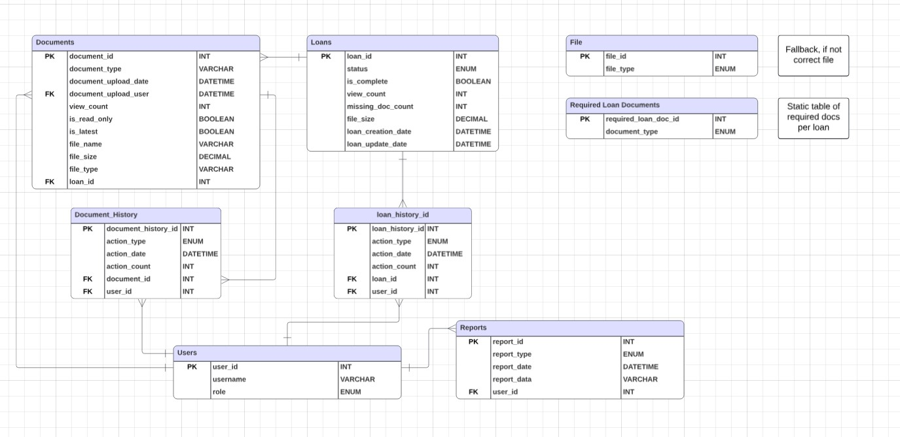

Enterprise Software Engineering - Document Management System
Enterprise-level web application demonstrating advanced software engineering principles and practice for my Enterprise Software Engineering class at UTSA
Project Overview
For my Enterprise Software Engineering class, over the course of the semester I used AWS Free tier server and created an EC2 instance. I used the Ubuntu Linux distro, and accessed it via Powershell, where I would ssh to the pem file provided by AWS. I installed PHP and MySQL on the server and used PHPMyAdmin to manage the database. Over the course of the semester we were tasked with creating a Document Management system, so our main goal was to get our server setup for the big collection period. We were to setup cronjobs to keep our server's memory stable to prevent crashes, as well as keeping our time as correct as possible using ntpdate. We had to connect to our professors API which we had hourly cronjobs going to collect data from. We had a couple weeks to find all the errors and timeouts he threw at us before data collection started. After the data collection period ended, we compiled all the data, error logs and such into reports. Using dreamweaver I setup a frontend where after the collection period was over you could view the documents, as well as upload new or existing loans.
Screenshots





Key Features
- Automated hourly data collection from external API using cronjobs
- Document upload functionality for new and existing loan documents
- Search capabilities by Loan ID, Document Type, and Date Range
- Error logging and execution tracking system
- Automated server memory management and stability monitoring
- Time synchronization using ntpdate for accurate timestamps
- Database-driven report generation for collected documents
- PHPMyAdmin interface for database administration and monitoring
- File list management with document metadata tracking
- Missing document detection and reporting
# Hourly data collection from professor's API
0 * * * * /usr/bin/php /var/www/html/collect_data.php >> /var/log/collection.log 2>&1
# Memory management - runs every 30 minutes
*/30 * * * * /usr/bin/free -m | /usr/bin/logger -t memory_check
# Time synchronization - runs daily at 2 AM
0 2 * * * /usr/sbin/ntpdate -u pool.ntp.org >> /var/log/ntp.log 2>&1Solution: Implemented robust error handling with retry logic in the data collection scripts, error logging to track all failures, and monitoring systems to identify patterns in API behavior. This allowed me to debug and resolve issues before the critical data collection period began.
Challenge: Preventing server crashes due to memory overflow during continuous data collection.
Solution: Configured cronjobs to monitor memory usage at regular intervals and implemented automated cleanup scripts to manage server resources. Used ntpdate for time synchronization to ensure accurate timestamps across all collected data and prevent timing conflicts.
Learning Outcomes
- Gained hands-on experience with AWS cloud infrastructure and EC2 instance management
- Developed proficiency in Linux server administration via SSH and command-line tools
- Learned to design and implement automated systems using cron for scheduled tasks
- Practiced API integration and developed strategies for handling unreliable external services
- Improved skills in database design, MySQL administration, and PHPMyAdmin usage
- Enhanced understanding of server resource management and monitoring
- Developed systematic approaches to error logging, debugging, and troubleshooting
- Gained experience in full-stack development with PHP, MySQL, HTML, and CSS
- Learned importance of system reliability, time synchronization, and defensive programming